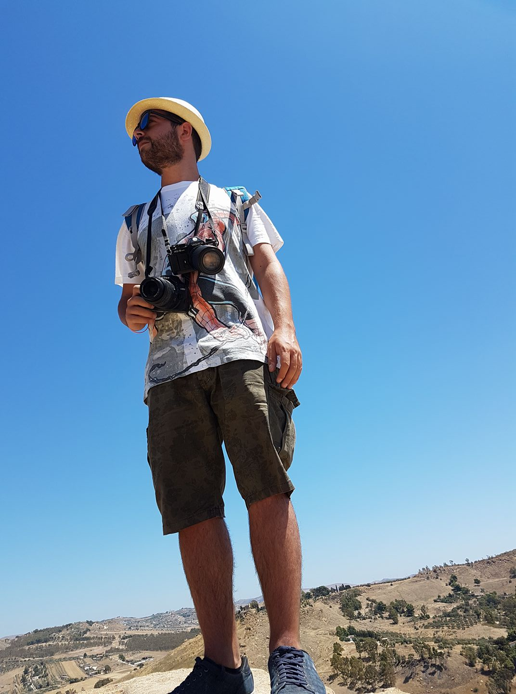
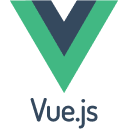
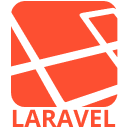
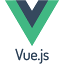
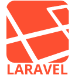

Ciao, I'm Marino di Lauro!

 





I'm a Jr. Full Stack Web Developer based in Napoli, Italy. With a background in animal science and a passion for technology, I've transitioned into web development to pursue my love for creating innovative digital solutions. I'm passionate about creating user-friendly and efficient web applications. My diverse background allows me to approach problems from unique perspectives, and I'm always eager to learn new technologies.